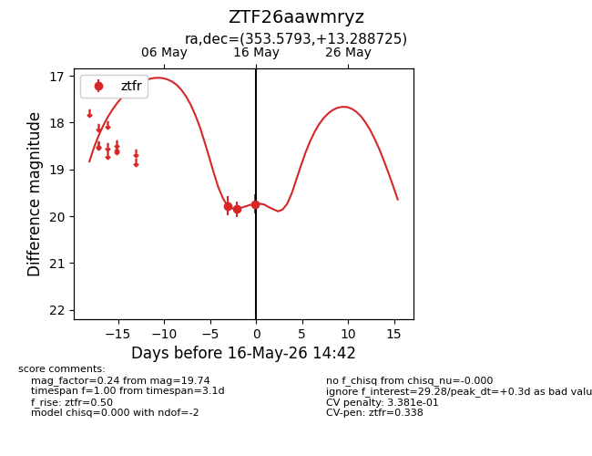
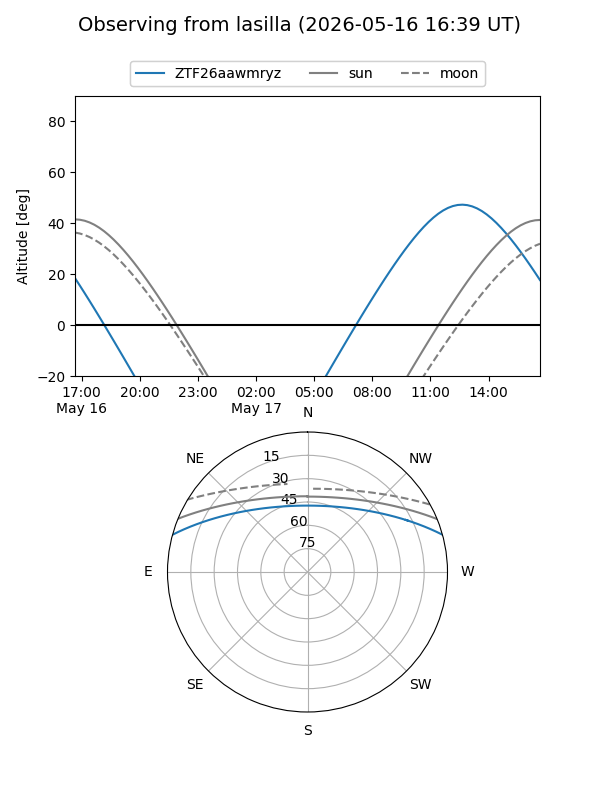
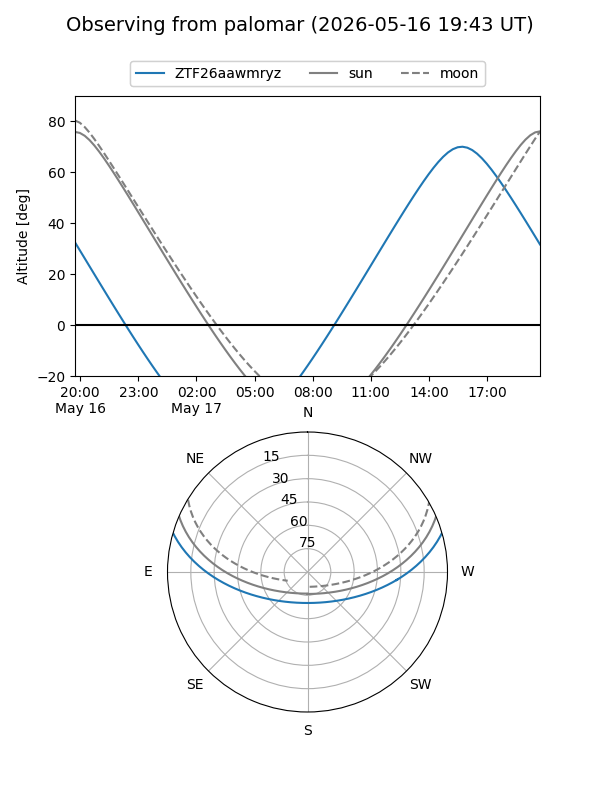
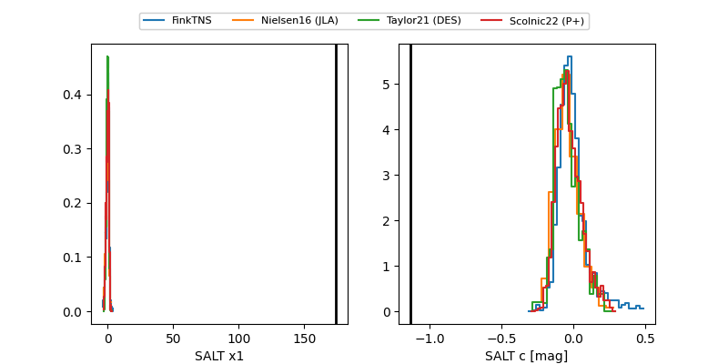

ZTF26aawmryz
Target ZTF26aawmryz at 2026-05-16 14:44
Aliases and brokers:
FINK: link
Lasair: link
ALeRCE: link
alt names
ZTF26aawmryz (ztf,fink_ztf)
Coordinates:
equatorial (ra, dec) = 353.5793,+13.28872
equatorial (HMS+DMS) = 23:34:19.02,+13:17:19.41
galactic (l, b) = (95.6640,-45.46056)
Flags:
likely cv
Photometry:
last ztfr=19.74
3 ztfr detections
Lightcurve

Visibility


Additional plots
